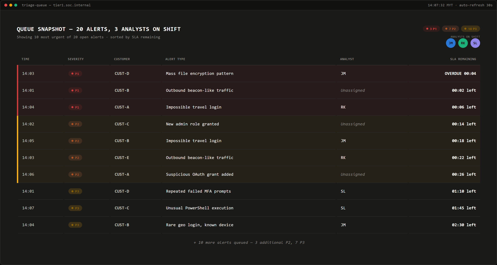
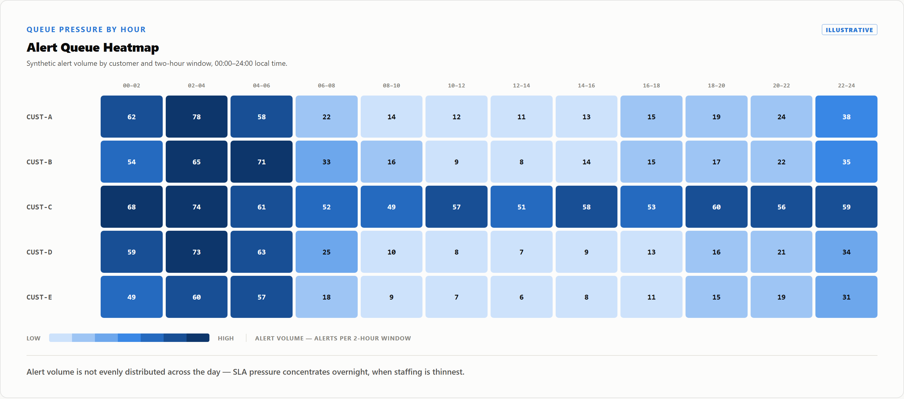

These composites are reconstructed from managed-SOC patterns, anonymized so the mechanics stay legible. Each case follows the same arc: setup, the contract's clock, what the shift does, and where the SLA number stops describing the investigation. Figures below are illustrative, not a published standard.
Setup. At 14:01 a port-scan sweep lands in the SIEM alongside an impossible-travel login at CUST-A and a beacon at CUST-B. Within six minutes the queue holds twenty tickets across five customers — 3 P1, 7 P2, 10 P3 — worked by three analysts.
What the contract's clock says. Each ticket runs its own ack/investigation clock, independent of the rest. CUST-D's encryption alert has about four minutes left before P1 breach; CUST-A's login has six, CUST-B's beacon two. The contract is twenty stopwatches ticking in parallel, unaware three people must stop them.
What actually happens. Severity alone doesn't say which alert is real: CUST-A's P1 login is thin evidence, CUST-B's P1 beacon is corroborated by DNS pattern and ASN reputation, and CUST-C's nominal P2 — an admin role change with no ticket behind it — is a credential attack in disguise. Worked strictly by severity, an analyst opens the wrong door first. The shift lead sees what severity can't, and reprioritizes accordingly — defensible calls that still read as late tickets weeks later.

This surge lands by day, but the same mechanism is worse overnight, where alert volume clusters by hour and outruns fixed headcount.

Where the SLA number becomes misleading. CUST-D's four minutes is real, but it describes a queue position, not a threat — not whether the alert is a false-positive or a live compromise, nor that the analysts are already committed elsewhere. The report may show two breaches from the same window, neither a story about competence.
Takeaway. Contractual SLA time is denominated per ticket; operational capacity per shift. Under surge those two systems stop reconciling — that mismatch, not analyst judgment, is usually the real driver of the breach on the report.